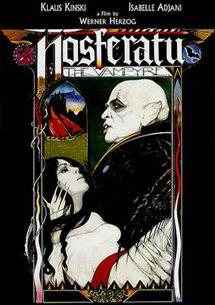

Werner Herzog
1979
107 minutes
Dracula rarely adapts well, but this is an exception. It's actually pretty good. Having an actual weird looking psychopath playing a somewhat different kind of weird looking psychopath helps a bit in this regard, as does having Isabelle Adjani thrown into the mix as an eye candy bonus.
For you, the best thing about Dracula shit has always been the world-building. What kind of world has a Dracula in it, or multiple draculas running around draculing? You always enjoyed the lore better than any particular story. In high school you were pretty into Vampire: The Masquerade, and you were a bit disappointed that your RPG nerd friends could never quite get a campaign going. Your proto-goth twin sibling friends who usually acted as DMs were quite talented at DMing. But as with most gaming groups things rarely got past a few sessions before being torn to pieces by internal squabbles (particularly between siblings) and other outside distractions and relationships. Your clueless dipshit human fighter Ravenloft character barely got a chance to meet anyone who even knew Strahd before that particular campaign fell apart. And your VTM campaign fell apart before you could even get your character sheets made.
Still when you're bored you'll find yourself accidentally spending hours on the White Wolf wiki, looking up Vampire lore from that universe and chasing the influences into the actual Wikipedia to see what kind of folklore influenced that universe.
This movie makes you wish the Twilight novels had come out a few decades earlier. Klaus Kinski was born to sparkle as Edward, with his pale skin and his blonde locks flowing in the winds of the Pacific Northwest, cast alongside an actress half his age as he and his vampire friends (played by Bruno S. and Bruno Ganz and a time-shifted Bruno Kirby) 21 Jump Street-ed things up in high school. You long for a world where Klaus Kinski got typecast as every vampire or vampyre from every subsequent franchise, to his utter horror. It would be worth it just for the Sesame Street outtakes from when Warner Brothers forced him to make an appearance to meet The Count in order to promote The Vampire Lestat.
You try not to think about the mouse in your kitchen who keeps popping his head out of one of your burners as you watch Dracula sink his particularly rodent-like front teeth into someone's neck. You want to put some hamster toys into Nosferatu-Dracula's coffin for him to gnaw on so he doesn't end up with malocclusion issues.
Time to choose something different: